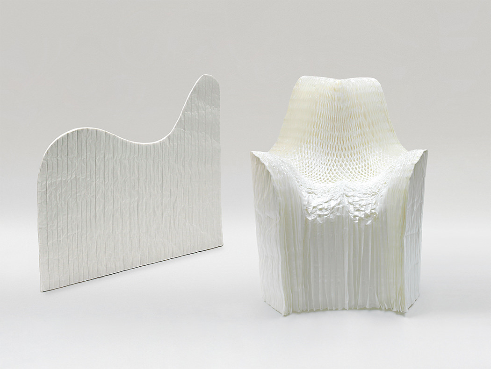
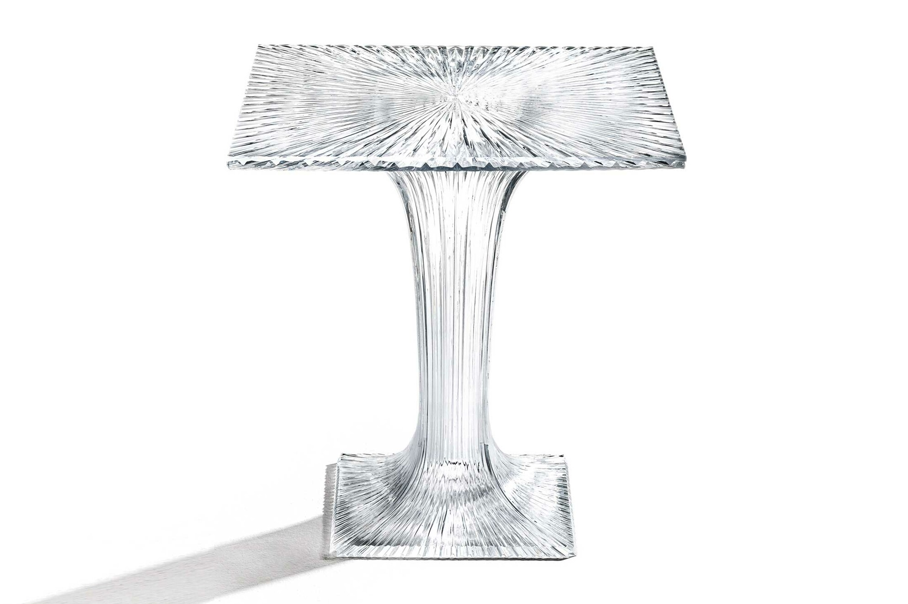
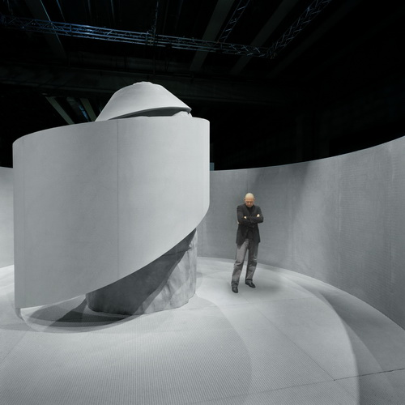
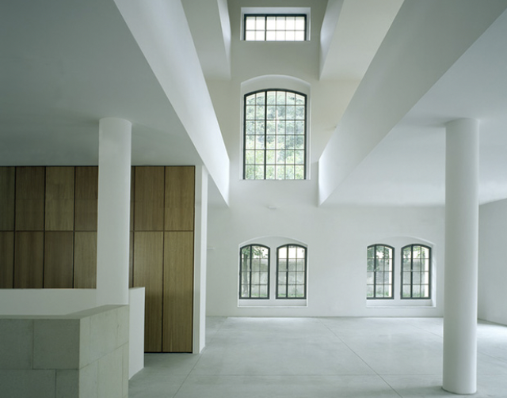
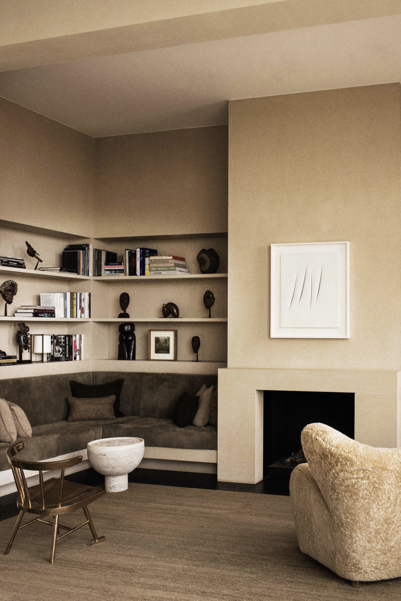
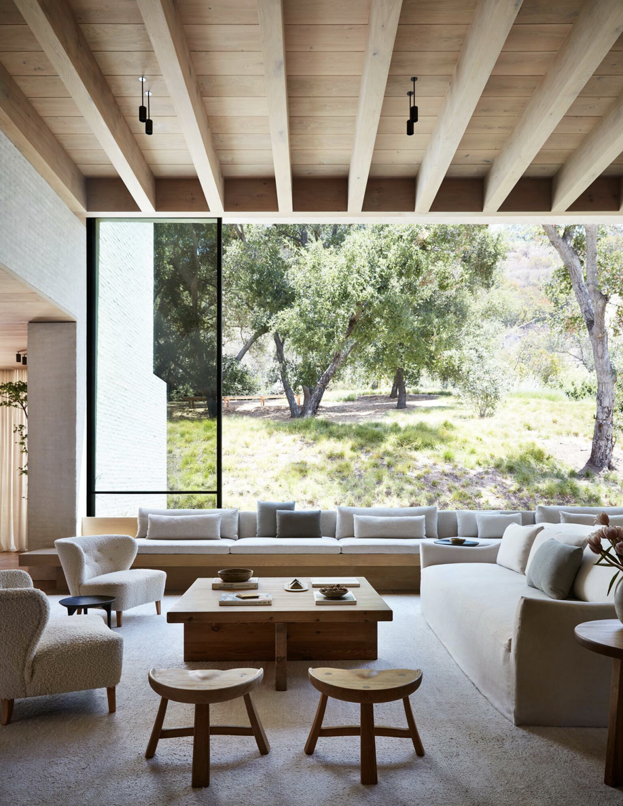

minimalistic art has been said to "been seen as extending the abstract idea that art should always have its own reality, and not be an imitation of something else in the world". minimalism does not try to represent an outside reality, instead the artsist intentionally wants the viewers to react to only what is infront of them with no other correlation from the outside world.
minimalism began in the late 1950s, when artists started to turn away from the relating art of previous generations. the development of minimalistic art is linked to the conceptual art movement... being that they both challenged the already exisiting structures of art as a whole. both movements believed and argued that the already importance given to art objects is disorded and also leads to an elitist art world, where then only the "priviledged" few can then enjoy.
minimalistic art offers a purified form of beauty, where nothing really needs to have any meaning and can be viewed purely for "enjoyment" purposes.





